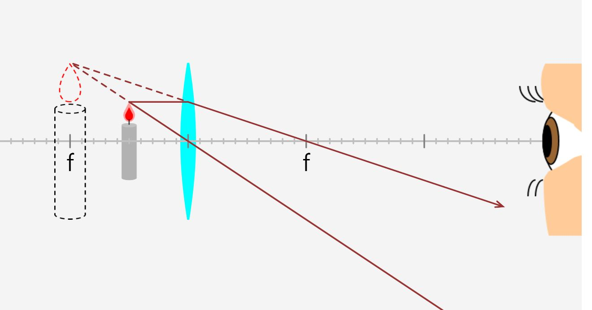
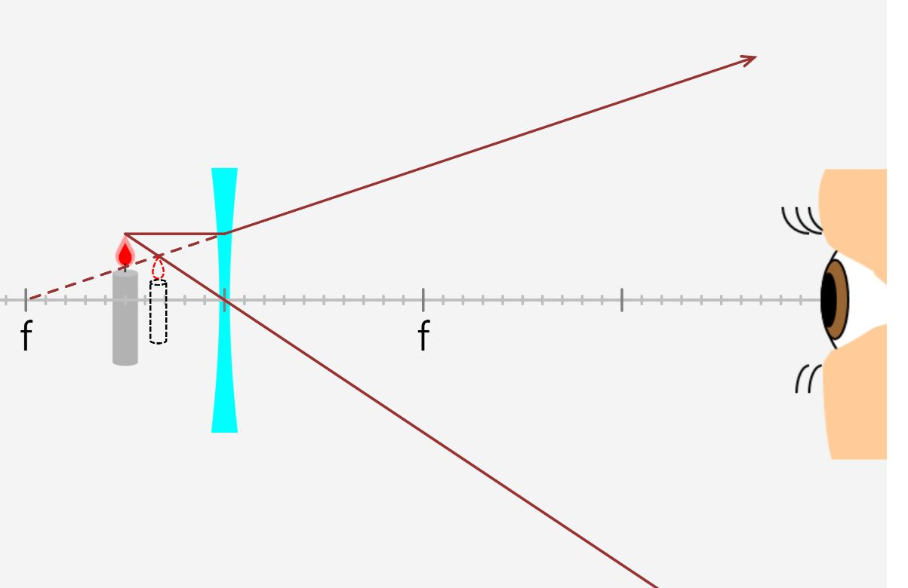
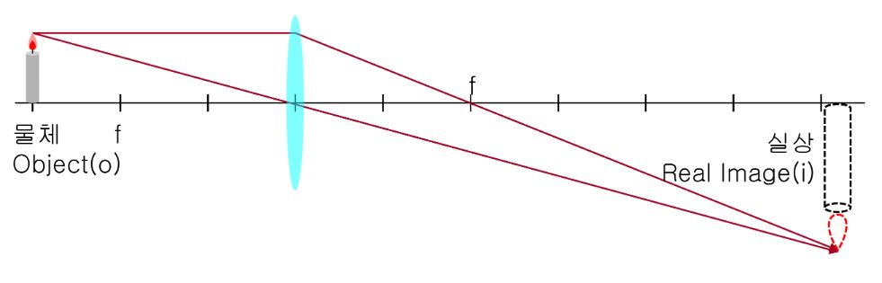

Ref : https://javalab.org/lens/
실상과 허상
어떤 물체를 보면서, 우리는 그 곳에 물체가 있다고 느낍니다. 그런데 물체나 발광체가 그곳에 없는데도, 어떤 반사체 또는 발광체가 그곳에 있다고 느끼는 경우 우리는 그곳에 ‘상(image)’이 있다고 말합니다.
광학에서 말하는 ‘상(image)’은 빛이 굴절 혹은 반사되어서 생깁니다.
실상(Real image): 실제로 빛이 그곳에서 모였다가 다시 출발하는 경우를 말합니다. 실상이 맺혀지는 위치에 종이를 대보면 종이에 맺힌 상이 실제로 보입니다.
허상(Virtual image): ‘상’이 맺힌 곳에 실제로 빛이 존재하지 않는 경우를 말합니다. 허상이 맺혀지는 위치에 종이를 대보면 아무런 상이 나타나지 않습니다.


